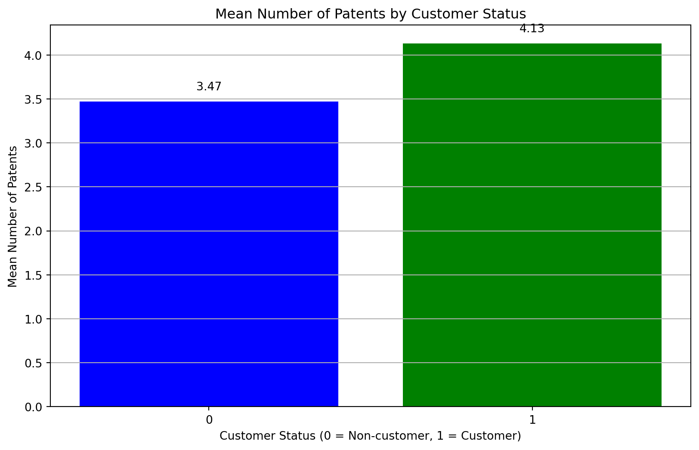
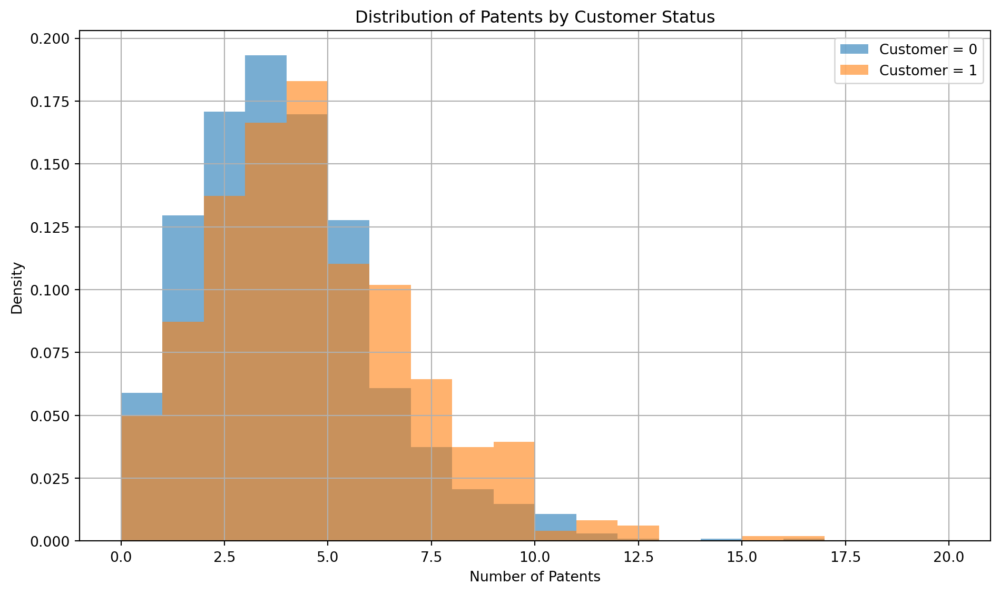
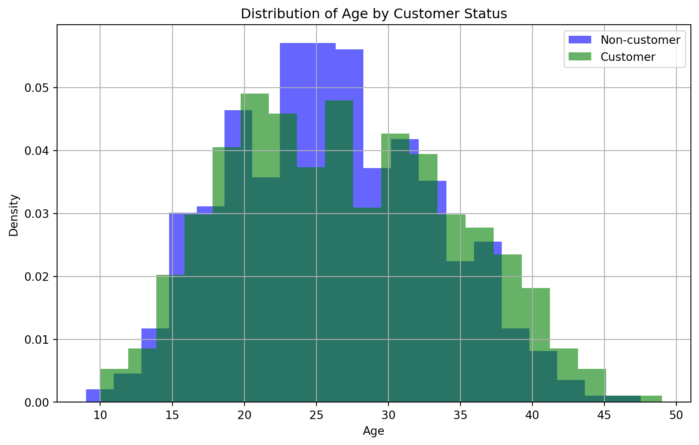
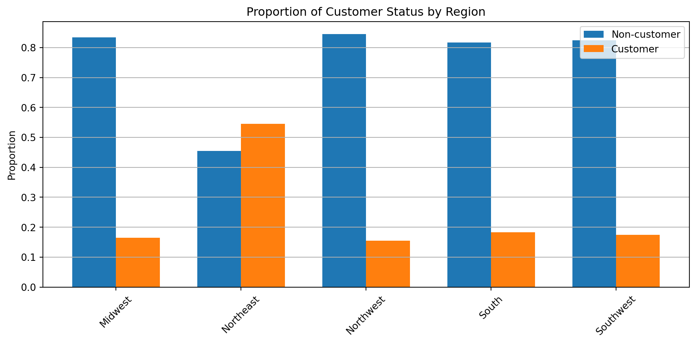
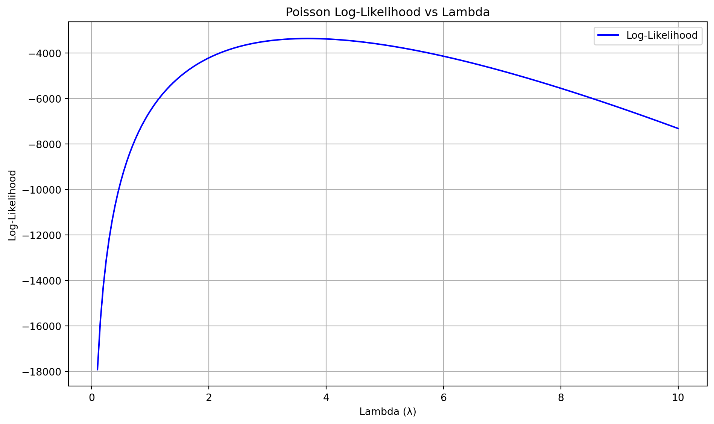
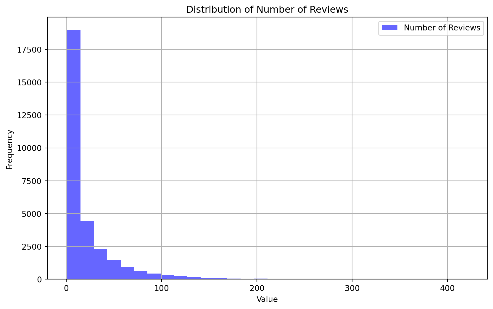
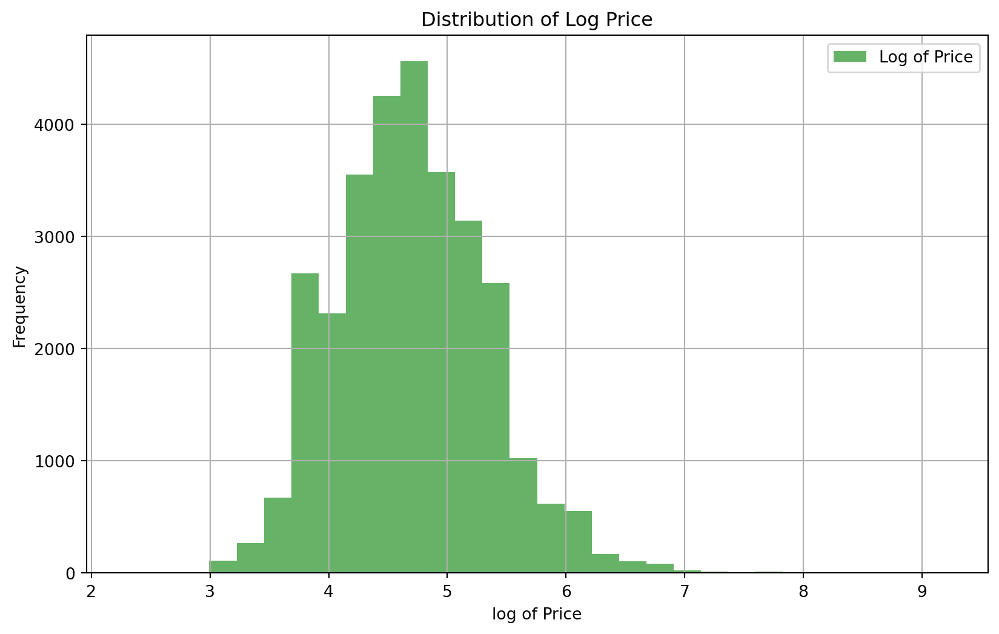

| patents | region | age | iscustomer | |
|---|---|---|---|---|
| 0 | 0 | Midwest | 32.5 | 0 |
| 1 | 3 | Southwest | 37.5 | 0 |
| 2 | 4 | Northwest | 27.0 | 1 |
| 3 | 3 | Northeast | 24.5 | 0 |
| 4 | 3 | Southwest | 37.0 | 0 |
Poisson Regression Examples
Blueprinty Case Study
Introduction
Blueprinty is a small firm that makes software for developing blueprints specifically for submitting patent applications to the US patent office. Their marketing team would like to make the claim that patent applicants using Blueprinty’s software are more successful in getting their patent applications approved. Ideal data to study such an effect might include the success rate of patent applications before using Blueprinty’s software and after using it. Unfortunately, such data is not available.
However, Blueprinty has collected data on 1,500 mature (non-startup) engineering firms. The data include each firm’s number of patents awarded over the last 5 years, regional location, age since incorporation, and whether or not the firm uses Blueprinty’s software. The marketing team would like to use this data to make the claim that firms using Blueprinty’s software are more successful in getting their patent applications approved.
Data
Let’s take a look at the dataset. The dataset has 1,500 observations and the following columns:
- patents: Count of patents (Poisson response variable)
- region: Categorical variable with multiple regions
- age: Continuous variable
- iscustomer: Binary variable (0/1)
Let’s also take a look at the distribution of patents by customer status.
iscustomer patents
0 0 3.473013
1 1 4.133056
The mean number of patents for customers is 4.13, while the mean number of patents for non-customers is 3.47. This suggests that customers tend to have more patents on average than non-customers.
# #| echo: false
# patent_summary = blueprinty.groupby('iscustomer')['patents'].describe()
# print(patent_summary)
Those who are customers have a higher mean number of patents than those who are not customers. This is a good sign for the marketing team, but it is important to note that the two groups are not randomly selected. Customers tend to have more patents on average and are more likely to be in the higher patent count range. Blueprinty customers are not selected at random. It may be important to account for systematic differences in the age and regional location of customers vs non-customers. It reinforces that customer status is not random — customers are probably more innovative or selected for other performance-related reasons.
Let’s take a look at the mean of ages and distribution of regions by customer status.
Age Summary by Customer Status:
iscustomer age
0 0 26.101570
1 1 26.900208
Customers have a slightly higher mean age of 26.9 than non-customers, who’s mean age was 26.1. Non-customers are on average slightly younger than the dataset mean. Both groups overlap between 20 and 30 years of age, but customers are more likely to be older than 30. Firm age may not be a strong predictor of patent success, but it is important to note that the two groups are not randomly selected.
Region Distribution by Customer Status:
count mean std min 25% 50% 75% max
iscustomer
0 1019.0 26.101570 6.945426 9.0 21.0 25.5 31.25 47.5
1 481.0 26.900208 7.814678 10.0 20.5 26.5 32.50 49.0
The Northeast region is the only region where the proportion of customers exceeds non-customers. The other regions have a higher proportion of non-customers. This is important to note because it may be that the Northeast region has a higher proportion of customers due to other factors, such as the availability of Blueprinty’s software or the type of firms in that region. This suggests regional variation in targeting, engagement, or behavior.
Estimation of Simple Poisson Model
Since our outcome variable of interest can only be small integer values per a set unit of time, we can use a Poisson density to model the number of patents awarded to each engineering firm over the last 5 years. We start by estimating a simple Poisson model via Maximum Likelihood.
Poisson Likelihood Function
Given that ( Y_i () ), the likelihood function for a sample ( Y_1, , Y_n ) is:
\[ L(\lambda \mid Y_1, \dots, Y_n) = \prod_{i=1}^n \frac{e^{-\lambda} \lambda^{Y_i}}{Y_i!} = e^{-n\lambda} \lambda^{\sum_{i=1}^n Y_i} \prod_{i=1}^n \frac{1}{Y_i!} \]
Poisson Log-Likelihood
Taking the logarithm of the likelihood, we get the log-likelihood function:
\[ \ell(\lambda) = -n\lambda + \left(\sum_{i=1}^n Y_i\right) \log \lambda - \sum_{i=1}^n \log(Y_i!) \]
We can also write the function above through the poisson_loglikelihood() below.
import numpy as np
from scipy.special import gammaln
def poisson_loglikelihood(lam, Y):
"""
Compute the log-likelihood for the Poisson model.
Parameters:
lmbda : float
Poisson rate parameter λ (must be > 0)
Y : array-like
Observed count data
Returns:
log-likelihood (float)
"""
Y = np.asarray(Y)
n = len(Y)
total_Y = np.sum(Y)
loglik = -n * lam + total_Y * np.log(lam) - np.sum(gammaln(Y + 1))
return loglik
Y = np.array([2, 3, 1, 0, 4, 2])
print(poisson_loglikelihood(2.5, Y))-10.36061887820603<!-- poisson_loglikelihood <- function(lambda, Y){
...
} -->Let’s create a function for the log-likelihood of the Poisson model. The function will take in the observed counts ( Y ) and the expected Poisson rate ( ) and return the log-likelihood.
from scipy.special import gammaln # for log(y!) = gammaln(y + 1)
def poisson_log_likelihood(y, lam):
"""
Compute the log-likelihood of a Poisson model.
Parameters:
y : array-like of observed counts
lam : array-like of expected Poisson rates (lambda)
Returns:
log_likelihood : float
"""
y = np.array(y)
lam = np.array(lam)
log_likelihood = np.sum(-lam + y * np.log(lam) - gammaln(y + 1))
return log_likelihoodLet’s use the poisson_log_likelihood() function to plot the log-likelihood against a range of lambda values.

todo: Find the MLE by optimizing your likelihood function with optim() in R or sp.optimize() in Python.
Now we will find the MLE by optimizing the likelihood function with optim() in R or sp.optimize() in Python.
MLE for lambda: 3.6847Function MLE: 3.6847 Optimizer MLE: 3.6847
As we can see using both the poisson_log_likelihood() function and the sp.optimize() function in python, we get matching results.
Estimation of Poisson Regression Model
Next, we extend our simple Poisson model to a Poisson Regression Model such that \(Y_i = \text{Poisson}(\lambda_i)\) where \(\lambda_i = \exp(X_i'\beta)\). The interpretation is that the success rate of patent awards is not constant across all firms (\(\lambda\)) but rather is a function of firm characteristics \(X_i\). Specifically, we will use the covariates age, age squared, region, and whether the firm is a customer of Blueprinty.
<!-- poisson_regression_likelihood <- function(beta, Y, X){ -->
...
}I will now add an additional argument to take in a covariate matrix X and change the parameter of the model from lambda to the beta vector.
In this model, lambda must be a positive number, so we choose the inverse link function g_inv() to be exp() so that \(\lambda_i = e^{X_i'\beta}\).
import numpy as np
from scipy.special import gammaln
def poisson_regression_loglikelihood(beta, Y, X):
"""
Poisson regression log-likelihood function.
Parameters:
beta : array-like, shape (k,)
Coefficient vector
Y : array-like, shape (n,)
Observed counts
X : array-like, shape (n, k)
Covariate matrix
Returns:
log-likelihood (float)
"""
beta = np.asarray(beta)
X = np.asarray(X)
Y = np.asarray(Y)
eta = X @ beta
lambda_ = np.exp(eta) # inverse link function
loglik = np.sum(Y * eta - lambda_ - gammaln(Y + 1))
return loglikLet’s compare our results to Python’s sp.optimize() function.
Coefficient Std. Error
intercept 1.188966 0.020017
age 1.076022 0.028426
age_squared -1.181548 0.098731
Northeast 0.029170 0.028358
Northwest -0.017574 0.043091
South 0.056561 0.034677
Southwest 0.050576 0.034681
iscustomer 0.207591 0.035270Next, we will check our resuts using Python sm.GLM() function
Generalized Linear Model Regression Results
==============================================================================
Dep. Variable: y No. Observations: 1500
Model: GLM Df Residuals: 1492
Model Family: Poisson Df Model: 7
Link Function: Log Scale: 1.0000
Method: IRLS Log-Likelihood: -3258.1
Date: Sun, 11 May 2025 Deviance: 2143.3
Time: 21:32:21 Pearson chi2: 2.07e+03
No. Iterations: 5 Pseudo R-squ. (CS): 0.1360
Covariance Type: nonrobust
==============================================================================
coef std err z P>|z| [0.025 0.975]
------------------------------------------------------------------------------
const 1.1890 0.037 32.365 0.000 1.117 1.261
x1 -0.0577 0.015 -3.843 0.000 -0.087 -0.028
x2 -0.1879 0.016 -11.513 0.000 -0.220 -0.156
x3 0.0292 0.044 0.669 0.504 -0.056 0.115
x4 -0.0176 0.054 -0.327 0.744 -0.123 0.088
x5 0.0566 0.053 1.074 0.283 -0.047 0.160
x6 0.0506 0.047 1.072 0.284 -0.042 0.143
x7 0.2076 0.031 6.719 0.000 0.147 0.268
==============================================================================Takeaways: - Customer status is a strong, statistically significant predictor of higher patent counts. - Age and age² matter, suggesting a non-linear relationship (e.g., mid-career firms are most productive). - Region effects are minimal after accounting for age and customer status. - Overall model fit is modest (pseudo-R² = 0.136), but meaningful.
The average treatment effect of being a Blueprinty customer is approximately: 0.79 additional patents per firm over 5 years
🧠 Interpretation: If every firm became a Blueprinty customer, we’d expect an average increase of 0.79 patents per firm.
This supports a positive and meaningful effect of using Blueprinty’s software on patent success, based on your Poisson regression model.
AirBnB Case Study
Introduction
AirBnB is a popular platform for booking short-term rentals. In March 2017, students Annika Awad, Evan Lebo, and Anna Linden scraped of 40,000 Airbnb listings from New York City. The data include the following variables:
| Unnamed: 0 | id | days | last_scraped | host_since | room_type | bathrooms | bedrooms | price | number_of_reviews | review_scores_cleanliness | review_scores_location | review_scores_value | instant_bookable | |
|---|---|---|---|---|---|---|---|---|---|---|---|---|---|---|
| 0 | 1 | 2515 | 3130 | 4/2/2017 | 9/6/2008 | Private room | 1.0 | 1.0 | 59 | 150 | 9.0 | 9.0 | 9.0 | f |
| 1 | 2 | 2595 | 3127 | 4/2/2017 | 9/9/2008 | Entire home/apt | 1.0 | 0.0 | 230 | 20 | 9.0 | 10.0 | 9.0 | f |
| 2 | 3 | 3647 | 3050 | 4/2/2017 | 11/25/2008 | Private room | 1.0 | 1.0 | 150 | 0 | NaN | NaN | NaN | f |
| 3 | 4 | 3831 | 3038 | 4/2/2017 | 12/7/2008 | Entire home/apt | 1.0 | 1.0 | 89 | 116 | 9.0 | 9.0 | 9.0 | f |
| 4 | 5 | 4611 | 3012 | 4/2/2017 | 1/2/2009 | Private room | NaN | 1.0 | 39 | 93 | 9.0 | 8.0 | 9.0 | t |
We will use the number of reviews as a proxy for the number of bookings. The data is not random, so we will need to be careful about how we interpret our results.
Let’s take a look at the data. The dataset has 40,000 observations and we can see that information is missing for some reviews.
host_since 35
bathrooms 160
bedrooms 76
review_scores_cleanliness 10195
review_scores_location 10254
review_scores_value 10256
dtype: int64We will drop observations with missing values or 0’s on relevant variables. After dropping the missing values, we are left with 30,346 observations. We will also turn the T/F for the instant_bookable variable into 1/0.


From the review histogram, we can see that the distribution is right-skewed. Most of the listings have a small number of reviews, with a few listings having a large number of reviews. This is consistent with the idea that most listings are not booked very often, while a few listings are very popular.
As for the log price histogram, we can see that the distribution is also almost symmetric . After log transformation, price loosely resembles a normal distribution. The raw price variable was highly skewed, so we took the log of price to make it more normally distributed. This is a common practice in regression analysis when the response variable is highly skewed.
Poisson Model
Generalized Linear Model Regression Results
==============================================================================
Dep. Variable: number_of_reviews No. Observations: 30160
Model: GLM Df Residuals: 30150
Model Family: Poisson Df Model: 9
Link Function: Log Scale: 1.0000
Method: IRLS Log-Likelihood: -5.2792e+05
Date: Sun, 11 May 2025 Deviance: 9.3438e+05
Time: 21:32:21 Pearson chi2: 1.41e+06
No. Iterations: 6 Pseudo R-squ. (CS): 0.5948
Covariance Type: nonrobust
=============================================================================================
coef std err z P>|z| [0.025 0.975]
---------------------------------------------------------------------------------------------
const 3.0759 0.019 160.628 0.000 3.038 3.113
bathrooms -0.1520 0.004 -40.620 0.000 -0.159 -0.145
bedrooms 0.0467 0.002 22.900 0.000 0.043 0.051
log_price 0.1345 0.003 46.713 0.000 0.129 0.140
review_scores_cleanliness 0.1087 0.001 72.677 0.000 0.106 0.112
review_scores_location -0.0977 0.002 -59.240 0.000 -0.101 -0.094
review_scores_value -0.0796 0.002 -43.758 0.000 -0.083 -0.076
instant_bookable 0.3408 0.003 117.879 0.000 0.335 0.347
Private room 0.0858 0.003 25.421 0.000 0.079 0.092
Shared room -0.1050 0.009 -11.536 0.000 -0.123 -0.087
=============================================================================================From the Poisson Model, we can gther than intant book has the biggest impact of almost 34% increase in the number of reviews. Each 1 point in cleanliness score increases bookings by 10.87%. More bedrooms increases bookings by 4.67%, and having private rooms also increase bookings by 8.58%.
Linear regression on log reviews
We will now fit a linear regression model on the log of reviews. This is a common practice when the response variable is highly skewed, as it can help to stabilize the variance and make the data more normally distributed.
OLS Regression Results
=================================================================================
Dep. Variable: log_number_of_reviews R-squared: 0.024
Model: OLS Adj. R-squared: 0.024
Method: Least Squares F-statistic: 150.9
Date: Sun, 11 May 2025 Prob (F-statistic): 7.98e-159
Time: 21:32:21 Log-Likelihood: -52587.
No. Observations: 30160 AIC: 1.052e+05
Df Residuals: 30154 BIC: 1.052e+05
Df Model: 5
Covariance Type: nonrobust
=============================================================================================
coef std err t P>|t| [0.025 0.975]
---------------------------------------------------------------------------------------------
Intercept 1.6344 0.112 14.629 0.000 1.415 1.853
log_price 0.1677 0.013 13.031 0.000 0.142 0.193
review_scores_cleanliness 0.1377 0.009 15.066 0.000 0.120 0.156
review_scores_location -0.1083 0.011 -9.930 0.000 -0.130 -0.087
review_scores_value -0.0635 0.012 -5.287 0.000 -0.087 -0.040
instant_bookable 0.3518 0.020 17.445 0.000 0.312 0.391
==============================================================================
Omnibus: 3451.332 Durbin-Watson: 1.552
Prob(Omnibus): 0.000 Jarque-Bera (JB): 966.834
Skew: 0.086 Prob(JB): 1.13e-210
Kurtosis: 2.140 Cond. No. 237.
==============================================================================
Notes:
[1] Standard Errors assume that the covariance matrix of the errors is correctly specified.The R-squared from the linear regression model is 2.3%, which is quite low. This suggests that the model does not explain a lot of the variation in the number of reviews. However, the coefficients are still interpretable. - Log price is 0.1214, Higher-priced listings tend to get ~13% more reviews. - Clean listings strongly correlate with more bookings — ~15% more reviews per point - Higher location scores associated with fewer reviews — possibly confounded or reflects niche areas
Takeaways
Hosts who enable Instant Book, maintain cleanliness, and set competitive prices are likely to receive more bookings. Room type differences like private or shared rooms do not impact bookings as much as long as the guest feels that it is worth the price. Further analysis will need to be conducted as we made many assumptions. This includes dropping 0 score reveiws and other missing values.